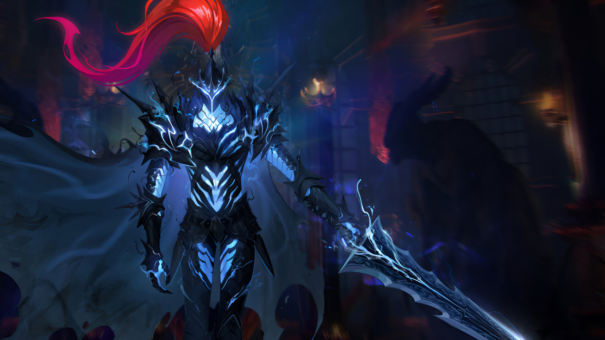
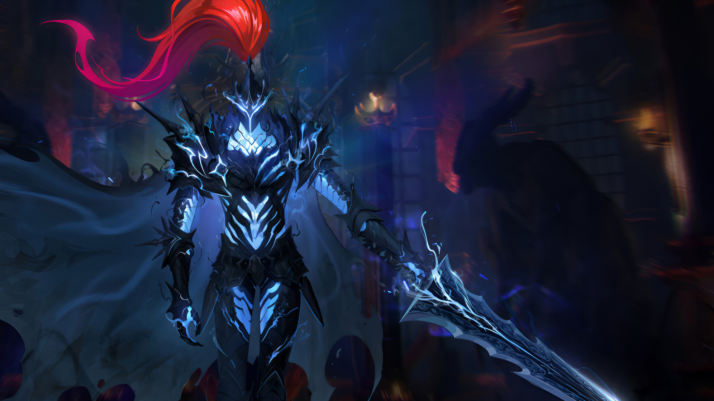

01. bellion
vamos falar da sombra mais recente e com toda certeza o mais poderoso de todos. Originalmente, ele era servo de Ashborn. Então, com toda certeza é um dos mais experiente e poderosos, onde passou a servir o Sung Jin Woo sem questionar, pois é um servo muito leal. Aliás, vale destacar que ele é tão poderoso que conseguiu derrotar o Beru com muita facilidade!
02. Beru
vamos falar de um dos mais poderosos de todos. Aliás, foi um dos primeiros inimigos mais fortes que Sung já enfrentou, na missão de mudar de classe. De todo modo, ao virar uma sombra ele sempre se mostrou muito leal ao protagonista, mesmo sendo mais forte do que ele no início. Com toda certeza é uma das principais armas de Sung Jin Woo.
03. Igris
igris umas das sombras mais poderosa de todas. Aliás, foi um dos primeiros inimigos mais fortes que Sung já enfrentou, na missão de mudar de classe. De todo modo, ao virar uma sombra ele sempre se mostrou muito leal ao protagonista, mesmo sendo mais forte do que ele no início. Com toda certeza é uma das principais armas de Sung Jin Woo.
04. Kamish
Kamish, servo de Antares, o Monarca da Destruição, ressurge como uma sombra após ser morto por caçadores rank S. Sung Jinwoo extraiu Kamish e obteve informações vitais sobre os governantes que o ameaçavam. Com habilidades inimagináveis e a habilidade principal “Medo do Dragão”, Kamish, como um dragão rank S, deixou uma marca indelével na narrativa de Solo Leveling.
05. Ganância
Ganância, a sombra oriunda de Hwang Dongsoo, um caçador rank S, desempenhou um papel crucial no tumultuado encontro entre Sung Jinwoo e Dongsoo. Durante o Arco da Conferência Internacional de Guildas, Dongsoo tentou, repetidamente, vingar a morte de seu irmão nas mãos de Jinwoo. No ápice do confronto, Sung Jinwoo virou a situação a seu favor, ignorando os apelos de Thomas Andre para poupar Dongsoo e, em vez disso, optando por encerrar a vida de seu adversário. A extração da sombra de Dongsoo resultou em Ganância, uma das sombras mais poderosas de Jinwoo, capaz de escapar da prisão de gelo do Monarca de Gelo com facilidade.
06. Tusk
Tusk é um grande orc com pele vermelha brilhante e olhos azuis brilhantes. Ele usa uma longa capa preta com capuz e um colar de caveiras.[1]
07. kaisel
Kaisel, o majestoso wyvern que uma vez serviu ao Rei Demônio Baran, foi transformado em uma das sombras mais formidáveis de Sung Jinwoo. Sua extração ocorreu após a vitória sobre o mestre de Kaisel, e embora sua destreza em combate seja limitada, ele brilha como um meio confiável de transporte nas mãos do protagonista. Ao enfrentar um ataque feroz das feras mágicas em sua escola, Jinah, irmã de Sung Jinwoo, encontrou a segurança em Kaisel, demonstrando a versatilidade do wyvern. Além disso, as habilidades regenerativas de Kaisel mostraram-se cruciais em situações de batalha, garantindo sua sobrevivência e a de seu mestre.